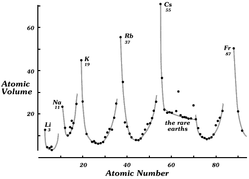

Reports present information in three main ways — tables, graphs and text.
Textual descriptions
Graphical and tabular displays invariably convey information much more clearly and in a much more immediate and memorable way than textual descriptions. However graphics and tables must be integrated into a report. The text should be used to summarise and interpret information in tables and graphs, but not simply repeat in words information that has already been clearly presented in another form.
Tables
Tabular displays are often effective summaries of very simple data sets. For example, the following table describes the New Zealand defence force personnel in 2005 as concisely as any graphical display.
| Count | Percentage | |
|---|---|---|
| Navy | 1,910 | 22% |
| Army | 4,438 | 52% |
| Air force | 2,266 | 26% |
| Total | 8,614 | 100% |
Large tables should usually be summarised briefly in the body of a report with the full table relegated to an appendix or made available for download from a web site.
Graphical displays
Bar charts, pie charts, histograms, maps and scatter plots are particularly effective ways to convey information since the human eye can readily detect, interpret and retain patterns. There are many further ways to graphically display information.
Good statistical graphics communicates information with clarity, precision and efficiency.
Annotation
A good graphical or tabular display can often ‘speak for itself’ — its message is immediately clear without further explanation. However it often helps to write comments on a diagram (a) to point out important features and (b) to add extra information such as labels that give extra insight.
In the diagram below, the added text and grey lines on the scatterplot help to highlight the periodicity of properties of chemical elements.
